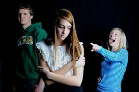
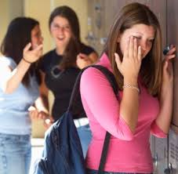

When I was being bullied May 24, 2018
Anonymous
hey this is Jeremiah i been bullied all my life they called me gay but i am and i just prayed to god to stop the bullied that pick on me and it work but still going kids will get mad at me if i just sang church music out loud but the police officer said i can sang all i want . i had a grown man i dont know his son came up to me and said he want to fight me and he talking about me and still happen. and a friend from my old high school he was a good friend but i call him the next day he just said dont call him no more i said why . he responded i did not do nothing i apologizes and everything still said i did not do nothing. and i had a friend like a brother he goes to my school he said he love me and stuff but when i call him he answer me and hang up the phone i told him why he haven’t been in school he said i dont go there no more and hang up the phone and said dont call me no more and i started to cry .

Criticized because of my faith May 22, 2018
Anonymous
I am German, I was born in Germany and when I came to England, we lived in the house that our father bought for us. Everything was fine but when I started school, I started first year of primary school. I had only found one friend, but she later left and somewhere else, I got put on a boys table, two of the boys where really nasty to me they kept on going through my school drawer and the boy next to me kept on poking with a sharp pencil, he was actually best mates with the guy in front of me. They did all the way till yr 5, i didn’t sit next to them or sat on there table in yr 6. After primary school I moved onto high school, I did find friends actually true friends we even formed a friendship group, we are in college now and we still in contact with each other I found many new friends in college especially in my class.
My story May 22, 2018
Anonymous
I was bullied harsh for 4years. It started in 5th grade. First it was “just” the name calling and outcasting. With time it got more and more serious. It was by a group of 6people in my class. They terrorized a lot of people, but I was their favorite. They ruined my life every way they could. They threw stuff at my head(like beanbags in breaks, balls during PE), they pushed me to the locker when I walked the corridors, they pushed me in the bathroom. They stole my belongings. They bullied me on the internet too, commented terrible things even when I posted a cute picture of my dog. It resulted me avoiding social media altogether. I remember one time they watered my chair and when I told it the teacher got angry at me. They took away my phone and sent away private photos. They hid my clothes several times after PE. The list goes on and on. I became paranoid, even when they weren’t hurting me I was always checking out how they will the next time. Some of them are so humiliating even here anonymously I struggle to tell them. At my 13th birthday they threw rubber stripes and other things at my hair for hours. I had enough of it, and confronted the most agressive member and he threw the remaining “ammunition” at my face. I fought him, but he beat me. I couldn’t even hit him. And I lost all hope after that. I became very depressed. I cried a lot, I begged my mother to not force me to go to school, but she was more afraid of the custodian office taking me away. We talked some about leaving for another school, but I was terrible afraid it gets worse(I heard other people got their faces flushed down the toilet, dragged around naked in the hallway or cutted by knives). I still hate myself for that decision. My life probably would be much different, much better if I moved school. They had connections to other gangs in other schools, but anything would have been better… When I was 13-14 I thought about suicide a lot. I thought about burning down the whole school a lot. It was all that left me the illusion that I still have some power, that I’m not just a tool, that these kids use so they can feel superior. I was so emotionally ruined when our head teacher died of cancer I really liked him and I felt sorry, but seeing my bullies in pain also gave me some joy. I had “breakdowns” every once in a while, I started to cry out laugh in front of an english class, that had people from other classes, who did not see as much of the daily bullying. I told them and the teacher about some of the things that they did to me. They pitied me and told me they’ll help, but of course nothing happened. No one ever helped. My mom tried to, but she didn’t know how. She took me to psychiatrists, who had no idea how evil kids can be. They never told me anything useful and have not helped me in any way. The teachers weren’t even discussing it, when it happened right in front of their eyes. The other students were just glad they were not the target. They molested a girl classmate regularly. They did all kinds of illegal and terrible things inside and outside of school and no one gave a damn. It was a criminal gang, nothing less. The guilty goes on living their life and the victims are scarred for life.
I had to deal with this long after it stopped. I tried to fit in highschool, like it was a fresh new start, but I couldn’t. I became asocial. You can never fully heal from something like this. I am the perfect example, as this all happened a decade ago. And every once in a while something stirs up these emotions. The regret, the pain, the shame, but mostly the anger. That no oone is held accountable. That these things still happen every day.
And I don’t know what’s the solution. But we have to find one.

I heard you! May 21, 2018
Anonymous
When I was in 5th grade my normal lunch table was packed so I had to sit with someone else. It ended up being the “popular” kids. I tried to keep to myself because I knew some of them liked to make fun of me and I hoped I wouldn’t be noticed. Unfortunately, they did notice me. One of the kids whispered, “I’m going kick her Chinese ass back to Beijing”. I’m not sure if he meant for me to hear or not. It was kinda obvious because he looked at me.
Bullied May 21, 2018
Anonymous
looking back at second grade at the end of the year, I noticed my friends trying to be show offs and trying to purposely always say I lied about doing youtube secretly even if I actually did. Moving on to 3rd grade things got more serious and that’s when my bullying started appearing and happening. This girl named M was mostly like the leader of her group and she would hurt my feelings. Once I didn’t even hear her say this, “Why is everyone going around her even if she isn’t that cool” and her friends were secretly saying yes and agreeing so I wouldn’t know. Next thing I know I step into 4th grade and so then that’s where I got the moments of depression…. every day when I came back from school you maybe notice a bruise but I hide it so then at nights I would cry hoping that the bullying would stop but it never happened. Once I went through 5th and 6th grade I started to hurt myself. Moving on to 8th grade which where I am now. I try not to be bullied, I sometimes don’t even stand up for myself which makes me left beat up or hurt. I’ll continue my story sooner or later… gotta go before I get catced on my phone in class😐
Suicide and Friends May 18, 2018
Anonymous
“Hello” was the first word I spoke to my peers, I am a Freshman in high school and I have attempted suicide multiple times due to bullying. I said hello and the person (the future bully) said hello back. We started talking and soon we had each told each other a little bit about ourselves, I am a Latino, and I am a huge nerd. This person was a very athletic and popular person. They soon began to start bullying me, first was simple name calling, it didn’t bother me too much, then the racial slurs, threats, social humiliation, and it just got worse and worse every day. I’d go to my school about it and they’d say things were being done but nothing really happened. Eventually, it became too much for me to handle, I kept feeling like I was worthless, a burden, and I tried to kill myself. Word spreads fast in high school and eventually, people learned about my attempt. At first, I thought that this would lead to more people bullying me, but it had a reverse effect, almost as if me nearly ending my life was a wake-up call to the real world. The year is now almost over, and while it has been rough, I now stick up for those who I see getting bullied.
Fortnite May 18, 2018
Anonymous
I hate epic games and my friends that say im not good 🙁
So called “friends” May 18, 2018
Anonymous
Since seventh grade has started for me I met these new friends that were loud and obnoxious. The only reason why I decided to hang out was them because they were very talkative. After a while, I realized that they were only using me for answers to anything and ended up calling me an answer sheet. After they started to accuse me of everything just so that they were not in trouble, I decided to end our so called friendship. After I ended it they decided to cyber bully me texting me inappropriate names and phrases until I blocked both of them. After it got really serious when they would slam a chair into me or throw shoes at me during gym I decided to go straight to the assistant principal and wrote a report. To this day, they have no friends but each other and still pick on me. Although that I am currently dealing with this situation, I learned that nobody should follow the crowd when you are born to stand out for who you are. I hope that this story helped you because I followed them for half of the school year as a “friend. “ Now I hang out with my friends from years back which helped me get the strength to push back and ignore them because without them I am a happier person.
My Pain May 16, 2018
Anonymous
I lived in Tyler Texas my whole life. When we moved to a small town in Lubbock. I was excited for my new start. I tried to make friends and I did. 4th grade was amazing I was popular and friendly. People would love to come over and hang out. By 5th grade people changed their opinions about me and hurt me mentally and physically. I cared what they had to say. The would hurt me again and again. By 6th grade I was depressed. My best friend started to become friends with my bullies. She played me and hurt me because she knew all my secrets. She cat fished me until I caught on and stopped. Only it was too late. People around the whole school begin to bully and hurt me mentally and physically and emotionally. I was pushed around and kicked. They would not let me sit with them because I was white. My friend who had betrayed me was moving because she was starting to get bullied because of me. She ditched me along with every one who was feeling the same way. I tried out for cheer and began to think about what people told me and decided to prove them wrong. In the long run I made cheer. People didn’t encourage me. I was suicidal and depressed for the whole year. That summer I didn’t hang out with my friends because I didn’t have any. People would hang out at the park by my house and would knock on my door and run. In 7th grade my depression was gone. And I began to feel better. I started eating again and felt at home. Then a girl moved to the school and tore a part my life once again. I didnt let her get to me until she called me names. I realized that really no one liked me. I then began to think and told myself I wouldnt leave my family. I quit basketball and softball. I couldn’t let cheer slip through my hands. I had to prove them wrong. With all my might I swear that I would be me. Till this day I can’t have full confidence in myself because of those people and now…now they are eating my dust.